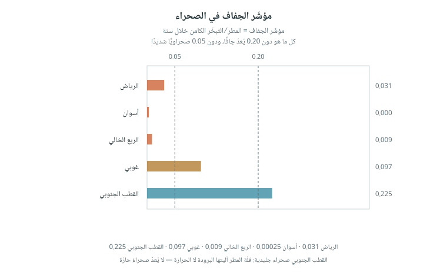

الصحراء
Desert
إقليم يقلّ فيه المطر السنوي عن حاجة التبخّر الكامن، فيبقى رصيد الماء سالبًا معظم العام. لا تُعرَّف بقلّة المطر وحدها بل بمؤشّر الجفاف (المطر ⁄ التبخّر الكامن): تحت 0.05 صحراوي شديد، والرياض عند 0.031.
الصحراء ليست رمزًا للحرارة والرمل، بل نظام رصيد مائي سالب. التعريف العملي يقوم على المقارنة بين ما تعطيه السماء وما يطلبه الهواء: مؤشّر الجفاف = المطر السنوي مقسومًا على التبخّر الكامن. فإذا نزل 300 مليمتر في إقليم بارد طلبه فيه 400 صار رطبًا نسبيًّا، وإذا نزلت نفس الكمية في إقليم حارّ طلبه 3,000 صارت جفافًا.
ولهذا تختلف الصحارى في الحرارة اختلافًا هائلًا: صحراء الربع الخالي حارّة، وصحراء غوبي باردة شتاءً، والقطب الجنوبي صحراء جليدية لأن مطرها أقل من 50 مليمترًا سنويًّا. والعامل الحاسم في كلها واحد: غياب الرطوبة الواصلة، إما لبعد عن البحر أو لحاجز جبلي (ظلّ المطر) أو لسيطرة مرتفع جوي يجعل الهواء هابطًا جافًّا.
الآلية
كيف يحدث الأمر على مستوى الجسيمات أو المتغيّرات المباشرة
يتشكّل الجفاف بثلاث آليات متضافرة. الأولى السيطرة الجوية: مرتفعات شبه مدارية يهبط فيها الهواء فيسخن وينخفض محتواه النسبي من البخار قبل أن يتكاثف. الثانية ظلّ المطر: كتلة هوائية رطبة تصعد فوق جبل فتبرد وتُمطر في الجانب المواجه، ثم تهبط في الجانب الآخر ساخنة جافة. الثالثة البعد عن مصادر الرطوبة: كل مسافة عن البحر تُنقص بخار الماء المتاح. وبعد تكوّن الجفاف تتولّى الأرض نفسها تدعيمه: غطاء نباتي شحيح يعني تبخّرًا ضعيفًا ورطوبة أقل في الهواء، فيقلّ المطر أكثر.
الأرقام والوحدات
العلاقات والوحدات والنطاقات العددية التي تسند الشرح
مؤشّر الجفاف AI = P ⁄ PET. تصنيف UNEP يضع ما دون 0.05 صحراوي شديدًا، ومن 0.05 إلى 0.20 صحراويًّا، ومن 0.20 إلى 0.50 شبه جافّ. والرياض: مطر سنوي نحو 100 مليمتر وتبخّر كامن نحو 3,200 مليمتر ⇒ AI = 0.031، أي في النطاق الصحراوي الشديد. وأسوان بمطر نحو 1 مليمتر على تبخّر 3,000 تعطي AI = 0.0003. وإقليم متوسطي بـ600 مليمتر على 900 يعطي 0.67 فيخرج من نطاق الجفاف كلّه رغم صيفه الجافّ.
الفرق الدقيق
المفهوم الملتبس الذي يُخلَط به، وأين ينفصلان
الصحراء ليست الأرض الحارّة: أبرد قارّة على الأرض صحراء جليدية، والحرارة ليست شرطًا. والجفاف ليس انعدام المطر: قد ينزل المطر كلّه في يوم واحد فيضًا ثم تعود الأرض جفافًا، لأن التوزيع الزمني يُهمّ بقدر المجموع. والتصحّر ليس توسّع الصحراء: التصحّر تدهور أرض في مناطق جافّة وشبه جافّة بسبب الاستخدام والإدارة، وليس زحف رمال. والصحراء ليست أرضًا ميتة: أنظمتها متكيّفة على نبضات الماء القليلة، ومخزونها الجوفي قد يكون قديمًا لا يتجدّد.
حدود التعريف
أين ينكسر التعريف أو النموذج وما الذي لا يفسّره
مؤشّر الجفاف يعتمد على قيم متوسطة طويلة الأمد، ويخفي التغيّر السنوي الذي قد يكون حاسمًا للحياة. وتبخّر الكامن في المعادلات كثيرًا ما يُقدَّر من الحرارة لا يُقاس مباشرة، فتصير دقة المؤشّر دقة النموذج لا دقة المطر. ولا يفسّر المؤشّر توزيع الماء فعليًّا: وادٍ صحراوي واحد قد يحمل ماءً دائمًا من جبل بعيد، ويكون مأهولًا أكثر من سهول حوله. أما تصنيف التصحّر فيختلف باختلاف طريقة القياس، ولهذا تُقرأ الأرقام العالمية بتحفّظ.

| الكمية | القيمة | المصدر |
|---|---|---|
| مؤشّر الجفاف للرياض | 0.031 بلا وحدة | [1] |
| حدّ التصنيف الصحراوي الشديد | 0.05 بلا وحدة | [2] |
| معدّل المطر السنوي في الرياض | 100 مليمتر | [1] |
| المطر السنوي في القارة القطبية الجنوبية | 50 مليمتر أو أقل | [3] |
المصادر
- 1 FAO — Dryland Forestry — FAO. www.fao.org/dryland-forestry/en/ · اطُّلع عليه 2026-11-16
- 2 UNCCD — United Nations Convention to Combat Desertification — UNCCD. www.unccd.int/ · اطُّلع عليه 2026-11-16
- 3 Desert — definition, types, and polar deserts — Encyclopaedia Britannica. www.britannica.com/science/desert · اطُّلع عليه 2026-11-16
استشهد بهذا المصطلح
الصيغتان مبنيتان من بيانات الصفحة نفسها: العنوان والتاريخ ورابط النسخة المنشورة.
الصحراء — Desert. (2026). ديوان المعرفة — انفراد. https://infiradev.com/diwan/terms/desert.html
@misc{desert2026,
title = {الصحراء},
titleaddon = {Desert},
howpublished = {{ديوان المعرفة — انفراد} — مرجع علمي عربي},
year = {2026},
url = {https://infiradev.com/diwan/terms/desert.html},
urldate = {2026-11-16},
note = {مراجعة علمية: مراجعة آلية — ديوان المعرفة (روابط المصادر + عقد المحتوى + وجود الرسم) 2026-11-16}
}
راجعه: مراجعة آلية — ديوان المعرفة (روابط المصادر + عقد المحتوى + وجود الرسم) 2026-11-16 · 2026-11-16 · آخر تحديث 2026-11-16